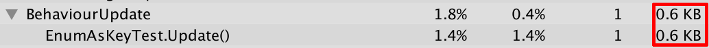

GCAlloc 问题一则
2016-10-26
当使用 Enum（枚举类型）作为 Dictionary 的 Key 时会产生 GCAlloc，特别当在 Update 中以及 for 循环中进行时，产生的 GCAlloc 是无法被忽视的。比如下面的测试代码：
public enum ENUM_ABC
{
A, B, C
}
private Dictionary<ENUM_ABC, Transform> dic = new Dictionary<ENUM_ABC, Transform>();
private void Update()
{
for(int i = 0; i < 10; ++i)
{
float rnd = Random.value;
if(rnd < 0.3f)
{
dic[ENUM_ABC.A] = transform;
}
else if (rnd < 0.6f)
{
dic[ENUM_ABC.B] = transform;
}
else
{
dic[ENUM_ABC.C] = transform;
}
}
}

测试代码所产生的 GCAlloc
具体原因就是数据的 Boxing，详细解释和解决方案见 dictionary enum key performance。
按照链接中的方法我们对代码进行修改，这样就能避免 GCAlloc 了。
// 自定义枚举类型的比较器
public struct ENUM_ABC_Comparer : IEqualityComparer<ENUM_ABC>
{
public bool Equals(ENUM_ABC x, ENUM_ABC y)
{
return x == y;
}
public int GetHashCode(ENUM_ABC obj)
{
return (int)obj;
}
}
// 创建 Dictionary 时传入自定义比较器
private Dictionary<ENUM_ABC, Transform> dic = new Dictionary<ENUM_ABC, Transform>(new ENUM_ABC_Comparer());